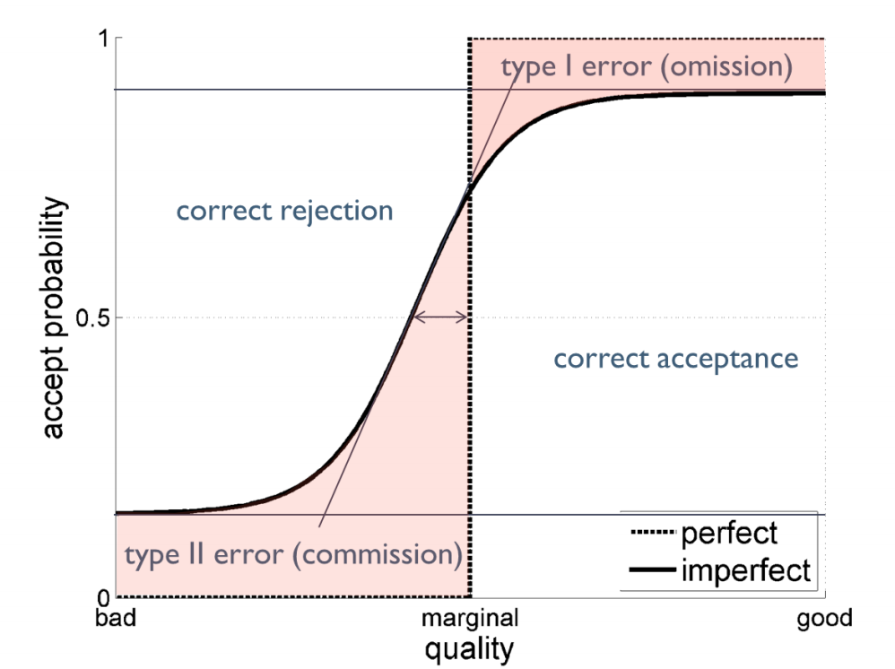

Research
This semester, I am particularly interested in the screening function in organizational decision making.

Replication Notes
I use replication exercises as part of my research training. They help me understand how research questions are translated into models, assumptions, simulations, empirical designs, and interpretations.
This section documents selected replication notes, coding exercises, and reflections from my learning process. These notes are not intended as formal publications, but as part of my ongoing development as a researcher.
Current replication focus
I am currently interested in papers related to organizational learning, mutual learning, performance feedback, exploration, and decision making. My goal is to understand how model assumptions shape theoretical insights and how computational approaches can be used to study organizational processes.
Papers I Like
I keep a small list of papers that shape my current thinking about organizational learning, mutual learning, feedback, exploration, and decision making. Some of them may become replication exercises, reading notes, or starting points for future research ideas.
I am interested in this paper because it connects learning processes, organizational adaptation, and the dynamics of mutual learning. It is closely related to my broader interest in how people and organizations make decisions, learn from information, and respond to uncertainty over time.
I am interested in this paper because it examines how timely performance feedback changes the relationship between learning speed and exploration. It speaks directly to questions about how organizations learn from information, how individuals choose whom to imitate, and how fast learning can sometimes support rather than undermine sustained exploration.
DOI: 10.1002/smj.70098